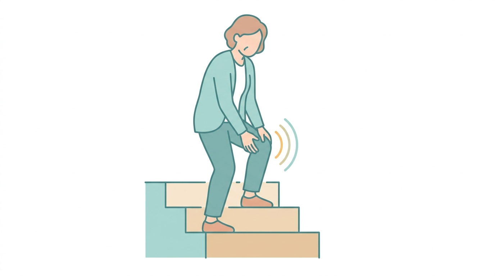
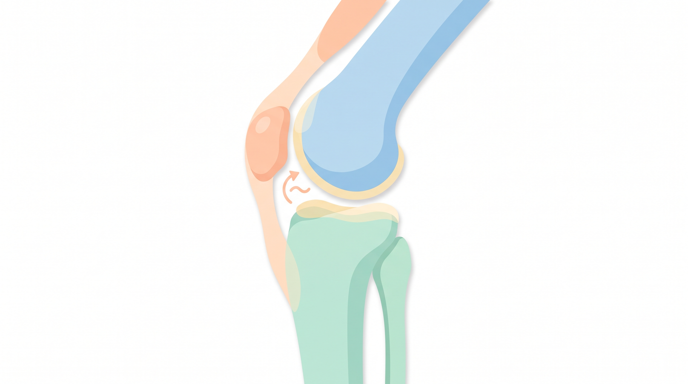
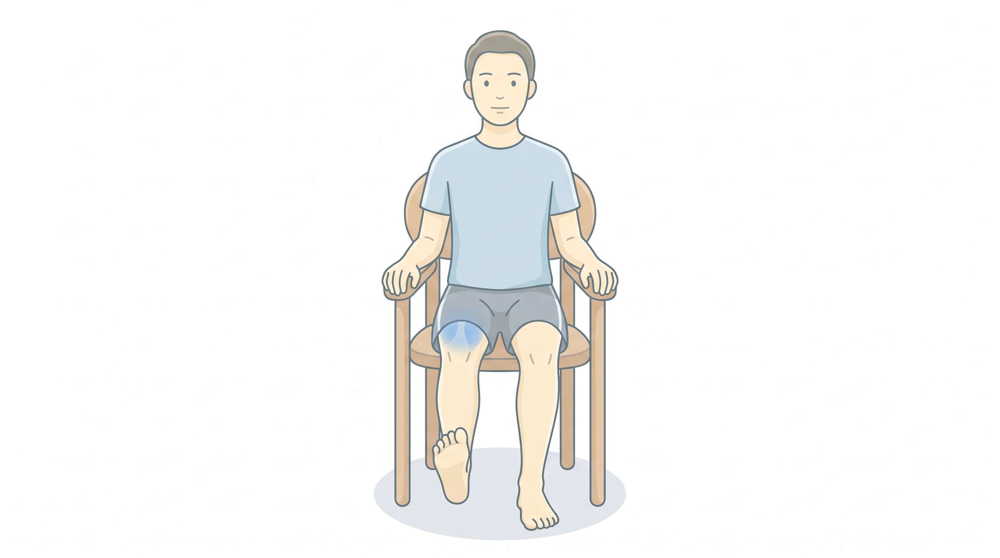

이 글은 정형외과 전문의 관점에서 감수한 건강 정보입니다. 일반적인 자가관리 지식을 돕기 위한 내용이며, 개별 진단·치료를 대체하지 않습니다. 아래 경고 신호에 해당하면 반드시 의료기관을 방문해 주세요.

무릎 소리(크레피투스)는 통증·붓기 없이 나는 경우가 대부분 정상 생리현상입니다.
핵심 요약 3줄
무릎에서 나는 소리(의학용어 크레피투스)는 통증·붓기·걸림이 없다면 대부분 정상 생리현상입니다.
정작 중요한 건 소리의 크기가 아니라 함께 오는 증상입니다 — 통증, 붓기, 잠김, 꺾임이 있으면 확인이 필요합니다.
소리가 통증을 동반하거나 2주 이상 지속되면, 자가운동만 반복하지 말고 정형외과 진료로 원인을 감별하세요.
무릎에서 왜 소리가 날까 — '크레피투스'의 정체
무릎을 굽히거나 계단을 내려갈 때 '뚝', '사각사각' 소리가 나면 덜컥 겁이 나기 마련입니다. 이런 관절 소리를 의학적으로 크레피투스(crepitus)라고 부릅니다. 원인은 다양합니다. 관절 안 윤활액에 생긴 작은 기포가 터지는 소리(무릎을 오래 굽혔다 펼 때 나는 '뚝'), 힘줄·인대가 뼈 돌기를 지나며 나는 마찰음, 그리고 슬개골(무릎뼈)과 넓적다리뼈가 닿는 면이 매끄럽지 않을 때 나는 소리 등이 대표적입니다.

슬개골(무릎뼈)과 대퇴골이 닿는 면이 매끄럽지 않으면 마찰음이 날 수 있습니다.
핵심은 소리 자체가 병의 심각도를 뜻하지 않는다는 점입니다. 크고 잦은 소리라도 통증이 없으면 문제가 아닌 경우가 많고, 반대로 소리가 작아도 통증·붓기가 있으면 살펴봐야 합니다.
걱정 안 해도 되는 소리 vs 확인이 필요한 소리
대체로 괜찮은 소리: 통증·붓기 없이 가끔 나는 '뚝', 오래 앉아 있다 일어설 때 한 번씩 나는 소리. 좌우 어느 쪽에서든 날 수 있고, 시간이 지나도 악화되지 않습니다.
확인이 필요한 소리: 소리와 함께 통증이 있거나, 무릎이 붓고, 특정 동작에서 걸리거나 잠기고, 힘이 빠지며 꺾이는 느낌이 동반될 때입니다.
소리 유형별로 읽는 신호
무통성 '뚝'(캐비테이션): 관절 내 기포 현상으로, 대개 무해합니다.
계단·쪼그려 앉기에서 '사각사각': 슬개대퇴 관절의 마찰음으로, 통증이 함께 있으면 슬개대퇴 통증증후군·연골연화증을 의심할 수 있습니다.
걸림·잠김(펴다가 덜컥): 반월상연골 파열에서 나타날 수 있는 기계적 증상으로 진료가 필요합니다.
꺾임·불안정감: 인대 손상이나 근력 약화를 시사할 수 있습니다.
집에서 할 수 있는 관리와 운동
통증 없는 단순 소리라면 과도하게 걱정하기보다 무릎 주변 근력을 키우는 것이 도움이 됩니다.

앉아서 무릎을 편 채 다리를 드는 운동은 무릎 부담이 적은 대표적 근력 운동입니다.
대퇴사두근 강화: 앉아서 무릎을 편 채 허벅지에 힘을 주고 다리를 들어 10초 유지(무릎에 부담이 적은 대표 운동).
체중 관리·충분한 준비운동: 계단·등산 전 스트레칭으로 슬개대퇴 부담을 줄입니다.
통증을 유발하는 깊은 스쿼트·무리한 계단 운동은 피하기. 소리를 없애려 억지로 무릎을 꺾는 습관도 권하지 않습니다.
이럴 땐 병원으로 — 경고 신호 체크리스트
통증·붓기(무릎에 물이 참)·열감이 소리와 함께 있거나 2주 이상 지속될 때.
잠김(펴다가 걸림)·꺾임(힘이 쭉 빠짐) 등 기계적 증상이 있을 때 — 반월상연골·인대 손상 감별이 필요합니다.
외상(넘어짐·비틀림) 직후 소리와 함께 통증이 생겼거나, 계단·경사에서 통증이 점점 심해질 때 — 연골 손상이나 초기 관절염 평가가 필요합니다.
자주 묻는 질문(FAQ)
Q1. 무릎에서 소리는 나는데 하나도 안 아파요. 병원 가야 하나요? 통증·붓기·걸림이 전혀 없다면 대부분 정상 범위의 소리로, 곧바로 병원에 갈 필요는 없는 경우가 많습니다. 다만 소리가 점점 심해지거나 통증이 새로 생기면 진료를 받아보세요.
Q2. 소리가 나면 연골이 닳고 있다는 신호인가요? 꼭 그렇지는 않습니다. '소리=연골 손상'은 흔한 오해입니다. 다만 40대 이후 통증·아침 뻣뻣함·붓기를 동반하면 초기 골관절염 여부를 확인하는 것이 좋습니다.
Q3. 계단 내려갈 때만 사각거리고 살짝 아파요. 슬개대퇴 관절 문제일 수 있습니다. 대퇴사두근 강화와 통증 유발 동작 회피로 호전되는 경우가 많지만, 통증이 지속되면 진료로 확인하시길 권합니다.
마무리
무릎 소리는 대부분 무해하지만, 통증·붓기·잠김·꺾임이라는 신호가 함께 온다면 이야기가 달라집니다. 소리 자체에 집착하기보다 동반 증상을 기준으로 판단하시고, 애매하거나 증상이 지속된다면 정확한 진단과 처방은 정형외과 진료를 통해 받으시길 권해 드립니다.